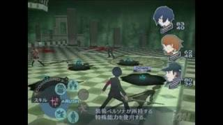
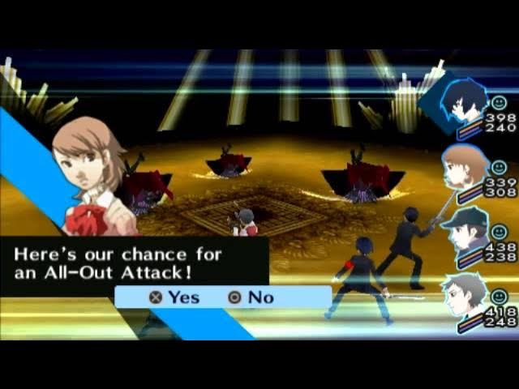

Persona 3, Persona 3 Portable & Persona 3 Reload
Persona 3 is the game that brought the series to a global audience. Set in the fictional Iwatodai City, it follows a group of high school students who discover the existence of the Dark Hour—a hidden slice of time at midnight when ordinary people turn into coffins and monsters called Shadows roam freely.
Persona 3 (PlayStation 2)
Persona 3, released outside Japan as Shin Megami Tensei: Persona 3, is a 2006 role-playing video game developed by Atlus. It is the fourth main installment in the Persona series, which is part of the larger Megami Tensei franchise. It was originally released for the PlayStation 2 in Japan in 2006 and in North America in 2007.
In this original PS2 release, the player controls a silent protagonist who joins SEES, a group dedicated to exploring the mysterious tower Tartarus and uncovering the truth behind the Dark Hour. By day, you attend school, build social links and manage your time; by night, you fight Shadows using Personas.
Gameplay – Persona 3
Battles are turn-based and use elemental strengths and weaknesses. Hitting an enemy’s weakness knocks them down and can lead to an All-Out Attack, where the whole party rushes the enemy for massive damage. The player directly controls only the protagonist by default, issuing general tactics to party members.
Outside of combat, time management is key. Each day is split into phases (morning, after school, evening), and you must decide whether to study, spend time with friends, or explore Tartarus. These choices affect your Social Links, which in turn power up Persona fusion in the Velvet Room.
Persona 3 Portable
Persona 3 Portable, an enhanced remaster of Persona 3 for the PlayStation Portable, was released in Japan on November 1, 2009, and released in North America on July 6, 2010. It was released to the majority of Europe on April 29, 2011, and the UK on April 28, 2011. The announcement in Famitsū revealed that the player would have the option to play as a female protagonist. This selection alters some aspects of the story: the first Persona gained by the protagonist, Orpheus, has a different appearance and Igor's assistant in the Velvet Room, Elizabeth, can be replaced with a male equivalent named Theodore. The gender choice also alters some aspects of the social link stories. In addition to the new playable character, there are two new difficulty levels to select from alongside the original game and FES's three. Persona 3 Portable only includes the story of the original Persona 3, otherwise referred to as "The Journey"; however, general changes have been made to the plot, regardless of character choice.
The game allows the player to choose the gender of the protagonist, which possibly opens up new routes and scenarios in the story. The theme of the game revolves around the butterfly effect, reflecting the changes that happen should the player pursue the path of one protagonist over the other, and the Latin phrase memento mori which literally translates as "remember (that you will) die," which has served a major role in the thematics since the original Persona 3.
Unlike other renditions of Persona 3, the game lacks 3D environments and character models (outside of combat areas such as Tartarus), all anime cutscenes are replaced by in-engine cutscenes or written descriptions, the graphics and audio quality were compressed, and The Answer ("Episode Aegis" in the Japanese version), a post-ending story without the series' hallmark social elements, is not available in P3P due to limited storage space on the PSP's UMD.
Persona 3 Portable was released as a stand-alone game and as part of a bundle package, which included a T-shirt and desk calendar. In North America, Atlus U.S.A. offered Junpei's baseball cap as a pre-order bonus. A port of Persona 3 Portable was released for Nintendo Switch, PlayStation 4, Windows, Xbox One and Xbox Series X/S on January 19, 2023. Limited Run Games announced that September that they would distribute special physical versions of Persona 3 Portable for PlayStation 4, Nintendo Switch and Xbox consoles in limited quantities alongside a similar release for Persona 4 Golden on the aforementioned platforms. Limited Run will release three variations of Persona 3 Portable's physical version, including a standard physical copy, a "Grimoire Edition" that packages the game in a special SteelBook case, a Grimoire Book box and slipcover, and a "S.E.E.S. Edition" that additionally comes with a replica of the Evoker used by the main party to summon Personas, as well as a 3D shadow box that depicts the cut-in graphic for the All-Out Attack sequence. Pre-orders for the physical releases went live on September 29, 2023, and remained active until November 12, 2023.
Gameplay – Persona 3 Portable
P3P changes exploration outside Tartarus to a 2D cursor-based interface, making the game more portable-friendly. Dungeon crawling and combat remain fully 3D. One major improvement is the ability to directly control all party members in battle, a feature borrowed from later Persona titles.
The female route not only offers different Social Links but also a noticeably different tone, providing new perspectives on the original story and characters.
Persona 3 Reload
Persona 3 Reload is a 2024 role-playing video game developed and published by Atlus. Reload is a remake of Persona 3 (2006), the fourth main installment of the Persona series, itself a part of the larger Megami Tensei franchise. As with the original game, the protagonist is a high school student returning to his home city a decade after his parents were killed in a car crash. He soon gains the potential to summon a Persona, the physical manifestation of his inner spirit, and joins the Specialized Extracurricular Execution Squad (S.E.E.S.), a group of like-minded Persona users. Together, they are tasked with defeating Shadows and uncovering the mystery of the Dark Hour.
A remake of Persona 3 was often requested by fans following the series' push towards global popularity thanks to the success of Persona 5 (2016), as was officially acknowledged by Atlus themselves. Reload began development in 2019 and was announced in June 2023. Reload remakes the main story of Persona 3, with various graphical and functional updates that bring the game in parity with the series' later installments. Shigenori Soejima oversaw overhauled art direction by Tomohiro Kumagai and updated character designs by Azusa Shimada. The music was written primarily by Atsushi Kitajoh, with additional arrangements by original composer Shoji Meguro, and vocal tracks performed by Azumi Takahashi and Lotus Juice.
Persona 3 Reload was released for PlayStation 4, PlayStation 5, Windows, Xbox One, and Xbox Series X/S on February 2, 2024. A Nintendo Switch 2 version was released on October 23, 2025. The game received generally positive reviews from critics and sold a million units within its first week of release, making it the fastest-selling game in the series to reach one million units.

Gameplay – Persona 3 Reload
Reload keeps the fundamental flow—school life by day, Tartarus by night—but modernizes the battle system with stylish menus, quick-swap Personas and snappier animations. Party members are directly controllable, and new abilities allow smoother movement around Tartarus and faster combat.
Social activities are expanded with new scenes and systems, making bonds with SEES members feel closer to Persona 5’s Confidant structure while respecting the tone of the original.
Legacy of Persona 3
Across the original, Portable and Reload, Persona 3 is remembered for its heavy themes of mortality, the fear of death and the importance of human connection. Its mix of school-life simulation and dungeon crawling became the blueprint for later entries and helped define the modern Persona identity.